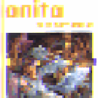
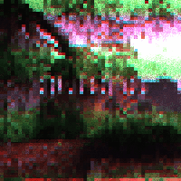
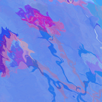

▼ arte ▲
MOÇO

MOÇO foi lançado como single (juntamente com uma versão karaoke) e é uma música para um amigo que
me faz falta há demasiado tempo.
Publicado a 4 de Julho de 21.
Envio-te esta música para formalizar que estou partido.
Morri de saudades tuas todos os dias, desde o eclipse até amanhã.
Este ghost não se admite.
Ouvir no bandcamp >>
Ouvir no spotify
>>
Ouvir no soundcloud >>
Também realizei/produzi o videoclipe desta música com a inestimável ajuda das minhas amizades Manuel
Barros, Miguel Amorim e Bernardo de César e com o apoio do Teatro Universitário do Porto e da CASA COMUM -
U.P. A lista completa de créditos para o MV está disponível na página do TUP.
Ver o videoclipe no Youtube>> / Subtítulos en español >> / English subtitles >> / Letra original >>
☷T'AI☰
 Com nome dado a partir do hexagrama 11 e do meu próprio: ☷T'AI☰ é um álbum que emerge quando a [minha] vida
se instala para celebrar o meu primeiro T-versário e as vésperas do 25 de Abril.
Com nome dado a partir do hexagrama 11 e do meu próprio: ☷T'AI☰ é um álbum que emerge quando a [minha] vida
se instala para celebrar o meu primeiro T-versário e as vésperas do 25 de Abril.Com uma pitada de auto-absorção e votos de um comunismo gay do espaço, luxuoso e totalmente automatizado.
Publicado a 24 de Abril de 2021
Os vídeos usados no spotify para este álbum utilizam filmagens gentilmente cedidas por Demy e MARXelo.
Ouvir no bandcamp >>
Ouvir no souncloud >>
Ouvir no spotify
>>
Ouvir na apple music >>
doravante (um tributo a ドラヤチ)

doravante é um tributo aos recomeços.
O nascimento de dorayachi [ドラヤチ ] em 2010 marcou o início da minha jornada na música. O primeiro projecto musical ao qual me dediquei inteiramente, a primeira banda com quem toquei ao vivo.
dorayachi inspiravam-se em artistas de rock e na cena cultural japonesa que foi o ponto de ligação entre os seus primeiros membros.
Agora, 8 anos após o fim da banda, doravante é uma reflexão, uma reinterpretação e uma nova perspectiva sobre as músicas do álbum nunca lançado de dorayachi: TOBU [飛ぶ].
É também um tributo à amizade.
A uma banda cuja composição mudou tanto, onde alguns dos seus membros tocaram um instrumento musical pela primeira vez e onde fazer música era muitas vezes só uma óptima desculpa para "anhar".
Publicado Às 9:38 (GMT) do dia 20 de Março de 2021.
Ouvir o álbum no bandcamp >>
Ouvir o álbum no
spotify >>
Ouvir o álbum no itunes >>
corvo rosa e o ritmo fantasma
 Gravei em 2014 uma série de trabalhos em guitarra
eléctrica quando decidi aprender a usar uma DAW.
Cada uma dessas músicas foi completada numa única noite (enquanto a minha mãe trabalhava fora de casa), e o
que resta hoje delas são os ficheiros .mp3 gravdos há mais de seis anos.
Gravei em 2014 uma série de trabalhos em guitarra
eléctrica quando decidi aprender a usar uma DAW.
Cada uma dessas músicas foi completada numa única noite (enquanto a minha mãe trabalhava fora de casa), e o
que resta hoje delas são os ficheiros .mp3 gravdos há mais de seis anos.
Todas elas são [ainda] dedicadas ao Diogo
Publicado a 20 de Janeiro de 2021
Ouvir o álbum no bandcamp
>>
Ouvir o álbum no soundcloud
>>
estímulo.miragem
 estímulo.miragem é um
álbum de seis faixas. Cada uma dura precisamente 10 minutos, totalizando uma hora de música.
A sua estrutura remete para a de um hexagrama de I Ching (六十四卦), formado por um bāguà (八卦) superior e um
inferior, cada um destes composto por três linhas.
É uma reflexão demorada sobre um evento curto, ajudada por um conjunto restrito de regras e pelo hexagrama
31 ䷞ (o estímulo / a influência / o cortejar / a comunhão).
Ao longo do álbum as faixas tornam-se cada vez mas estrtuturadas, rítmicas e tonais. Algumas estão
bipartidas numa divisão ruidosa e uma melódica.
estímulo.miragem é um
álbum de seis faixas. Cada uma dura precisamente 10 minutos, totalizando uma hora de música.
A sua estrutura remete para a de um hexagrama de I Ching (六十四卦), formado por um bāguà (八卦) superior e um
inferior, cada um destes composto por três linhas.
É uma reflexão demorada sobre um evento curto, ajudada por um conjunto restrito de regras e pelo hexagrama
31 ䷞ (o estímulo / a influência / o cortejar / a comunhão).
Ao longo do álbum as faixas tornam-se cada vez mas estrtuturadas, rítmicas e tonais. Algumas estão
bipartidas numa divisão ruidosa e uma melódica.Publicado às 22:23 (GMT) do dia 21 de Dezembro de 2018.
Os vídeos no spotify deste álbum foram generosamente feitos e oferecidos por girflux (ギ).
Ouvir o álbum no bandcamp >>
Ouvir o álbum no soundcloud >>
Ouvir o álbum no
spotify >>
ghostwritten
 ghostwritten foi um trio de
math-rock/post-rock baseado na cidade do Porto desde Novembro de 2013 até Agoso de 2018. Formação final:
Tiago Lêdo (guitarra), Dany Campos (guitarra) e Daniel Andrade (bateria). Antigos membros: Filipe Oliveira
(baixo), Afonso Aguiar (baixo).
ghostwritten foi um trio de
math-rock/post-rock baseado na cidade do Porto desde Novembro de 2013 até Agoso de 2018. Formação final:
Tiago Lêdo (guitarra), Dany Campos (guitarra) e Daniel Andrade (bateria). Antigos membros: Filipe Oliveira
(baixo), Afonso Aguiar (baixo). Ouvir a música Mother Tongue no Reverbnation >>
dorayachi
 dorayachi [ドラヤチ] foi uma banda de rock de
inspiração japonesa, baseada na cidade do Porto entre 2010 e 2013. Tocaram em vários eventos de cultura
japonesa e convenções de anime. Formação final: Sara Gomes — Arya Urubunny (voz), Tiago Lêdo — 空のリズム
(guitarra), Dany Campos — Dany (guitarra), Daniel Andrade (bateria), Filipe Oliveira — Sora (baixo). Antigos
membros: Sara Rocha — Hachi (baixo), João — Tsume (bateria), João Lobo (bateria).
dorayachi [ドラヤチ] foi uma banda de rock de
inspiração japonesa, baseada na cidade do Porto entre 2010 e 2013. Tocaram em vários eventos de cultura
japonesa e convenções de anime. Formação final: Sara Gomes — Arya Urubunny (voz), Tiago Lêdo — 空のリズム
(guitarra), Dany Campos — Dany (guitarra), Daniel Andrade (bateria), Filipe Oliveira — Sora (baixo). Antigos
membros: Sara Rocha — Hachi (baixo), João — Tsume (bateria), João Lobo (bateria).nanoparticular
 Nanoparticular é uma instalação digital
interactiva desenvolvida na hackathon de 5 dias EMERGENCE@UP, com o objectivo de dar a conhecer os
fantásticos poderes e potenciais perigos das nanopartículas metálicas. Equipa: Marte Verde Baqueiro, Marta
Correira, Francisca 'Kika' Gonçalves, Tiago Lêdo, António Sousa.
Nanoparticular é uma instalação digital
interactiva desenvolvida na hackathon de 5 dias EMERGENCE@UP, com o objectivo de dar a conhecer os
fantásticos poderes e potenciais perigos das nanopartículas metálicas. Equipa: Marte Verde Baqueiro, Marta
Correira, Francisca 'Kika' Gonçalves, Tiago Lêdo, António Sousa.Apresentado pela primeira vez a 27 de Setembro de 2019, na Casa Comum da Reitoria da Universidade do Porto.
a vague sense of presence
 a vague sense of presence é uma
simbiose entre os sons individuais e o seu campo aural abrangente. Cada um dxs compositorxs tomou a
liberdade de escolher o seu caminho dentro da composição generativa, culminando num trabalho que reflecte
assim as suas particularidades. Na conexão das partes, o caminho converge num ponto central.
Como colectivo, as partes compõe o todo. Ainda que presente e simbolizada por cada uns dos monitores, a
individualidade é diluida e do volume implícito na estrtutura emerge espaço de comunhão e comtemplação,
imerso no som. Cada composição e as transições entre si são generativas, fazendo uso de sistemas
probabilísticos e da compatibilidade inter-composição encontrada, compondo assim a obra final.
Uma instalação do COLECTIVO 「大音量コンピューター」 (loudvolumecomputer): Gonçalo Santos, ギ (Gui Gaspar/girflux), Ivo
Santos, Joana
Rodrigues, Tiago Lêdo, Luís Arandas, Marcelo Sousa, Paulo Teixeira e Pedro Sarmento).
a vague sense of presence é uma
simbiose entre os sons individuais e o seu campo aural abrangente. Cada um dxs compositorxs tomou a
liberdade de escolher o seu caminho dentro da composição generativa, culminando num trabalho que reflecte
assim as suas particularidades. Na conexão das partes, o caminho converge num ponto central.
Como colectivo, as partes compõe o todo. Ainda que presente e simbolizada por cada uns dos monitores, a
individualidade é diluida e do volume implícito na estrtutura emerge espaço de comunhão e comtemplação,
imerso no som. Cada composição e as transições entre si são generativas, fazendo uso de sistemas
probabilísticos e da compatibilidade inter-composição encontrada, compondo assim a obra final.
Uma instalação do COLECTIVO 「大音量コンピューター」 (loudvolumecomputer): Gonçalo Santos, ギ (Gui Gaspar/girflux), Ivo
Santos, Joana
Rodrigues, Tiago Lêdo, Luís Arandas, Marcelo Sousa, Paulo Teixeira e Pedro Sarmento).Primeira apresentação pública a 36 de Outubro de 2018 no FESTIVAL SEMIBREVE na cidade de Braga. Este trabalho foi parcialmente apoiado pelo MM-FEUP.
Ouvir a versão linear no bandcamp >>
Ver o teaser no Vimeo >>
Ver o making of no Vimeo >>
leave a message~
 Leave a Message~ é uma instalação interactiva que
utiliza por base um patch de Pure Data e um telefone modificado. Ao pegar no auscultador, ss utilizadorxs
são instruídxs a deixar uma mensagem a seguir ao sinal sonoro, tendo alguns segundos para deixar uma
mensagem de voz e terminar a transmissão. X próximx utilizadorx a pegar no auscultador do telefone ouvirá a
mensagem de voz deixada pelx utilizadorx anterior e terá, de seguida, a oportunidade de deixar gravada a sua
própria mensagem. No final da demonstração,a totalidade das mensagem de voz são analisadas através de um
programa de fala-para-texto e é gerada uma nuvem com as palavras mais utilizadas nas mensagens. Equipa: Ana
Ferreira, Elaine Aguilar, José Pedro Silva, Roberto 'William' Nóbrega, Tiago Lêdo.
Leave a Message~ é uma instalação interactiva que
utiliza por base um patch de Pure Data e um telefone modificado. Ao pegar no auscultador, ss utilizadorxs
são instruídxs a deixar uma mensagem a seguir ao sinal sonoro, tendo alguns segundos para deixar uma
mensagem de voz e terminar a transmissão. X próximx utilizadorx a pegar no auscultador do telefone ouvirá a
mensagem de voz deixada pelx utilizadorx anterior e terá, de seguida, a oportunidade de deixar gravada a sua
própria mensagem. No final da demonstração,a totalidade das mensagem de voz são analisadas através de um
programa de fala-para-texto e é gerada uma nuvem com as palavras mais utilizadas nas mensagens. Equipa: Ana
Ferreira, Elaine Aguilar, José Pedro Silva, Roberto 'William' Nóbrega, Tiago Lêdo.Este projecto foi apresentado em Janeiro de 2018 na Faculdade de Engenharia da Universidade do Porto.
Watch the video on Vimeo >>
Este patch está disponível no GitHub >>
câmara
 Câmara é uma instalação
interactiva, um quarto para explorar e reflctir sobre os estados de consciência através das fases do sono.
Nesta instalação foi construída uma cama embutindo sensores no seu interior para recolher dados sobre a
posição dxs participantes enquanto estxs observam uma janela projectada. Através desta janela observa-se um
exterior urbano nocturno que se misturará mais ou menos rapidamente com um cenário onírico consoante o tempo
de permanência na cama e na ausência de movimentos. Equipa: Daniel Machado, Gonçalo Santos, Elaine Aguilar,
Marcelo Valle, Miguel Soares e Tiago Lêdo.
Câmara é uma instalação
interactiva, um quarto para explorar e reflctir sobre os estados de consciência através das fases do sono.
Nesta instalação foi construída uma cama embutindo sensores no seu interior para recolher dados sobre a
posição dxs participantes enquanto estxs observam uma janela projectada. Através desta janela observa-se um
exterior urbano nocturno que se misturará mais ou menos rapidamente com um cenário onírico consoante o tempo
de permanência na cama e na ausência de movimentos. Equipa: Daniel Machado, Gonçalo Santos, Elaine Aguilar,
Marcelo Valle, Miguel Soares e Tiago Lêdo.Apresentada pela primeira vez em Janeiro de 2018 na Escola Secundária Carlos Amarante na cidade de Braga. Esta apresentação pública foi apoia pelo programa BragaMediaArts.
flormiga

Flormiga é um projecto de tecnologia digital e música interactiva com o objectivo de promover uma relação sensível entre crianças e a natureza através de plantas-sónicas. Este projecto é o objecto da Dissertação de Mestrado Music with Plants: Cultivating Bonds Between Grade-Schoolers and Nature through Sound Design e encontra-se em desenvolvimento em colaboração e com o apoio do programa educativo da Orquestra Jazz de Matosinhos. Este projecto foi aparesentado na 21st Conference Consciousness Reframed 2019 — Sentient States: Bio-mind and Techno-nature
Ler a Dissertação >>
Ver teaser vídeo >>
Este patch está disponível no Github >>
Ouvir o sound design no Soundcloud >>
anita caça fantasmas
Anita Caça Fantasmas é um patch interactivo em MAX/MSP baseado em EVP (fenómenos de voz electrónica) que convida xs participantes a desvendar xs fantasmas de uma divisão assombrada. Este patch usa análise sonora em tempo-real para disparar eventos, gerar som e responder xs participantes de maneira assutadora e lúdica.Ver demo em vídeo no Vimeo >>
Este patch está disponível no GitHub >>
toban djan
 Toban Djan é um patch de som
generativo em MAX/MSP que apresenta uma paisagem sonora suburbana à beira-mar imaginada. Uma experiência
solitária numa paragem de autocarro na companhia de uma voz masculina e uma voz feminina que falam uma
impressão de uma língua este-asiática, de uma mosca e de uma sensação de ansiedade constante. Foi concebida
para ambientes espacializados utilizando Ambisonics e foi apresentada em configurações de 6 e de 9
colunas.
Toban Djan é um patch de som
generativo em MAX/MSP que apresenta uma paisagem sonora suburbana à beira-mar imaginada. Uma experiência
solitária numa paragem de autocarro na companhia de uma voz masculina e uma voz feminina que falam uma
impressão de uma língua este-asiática, de uma mosca e de uma sensação de ansiedade constante. Foi concebida
para ambientes espacializados utilizando Ambisonics e foi apresentada em configurações de 6 e de 9
colunas.Este patch foi exibido como parte da instaçaão a vague sense of presence e gravado como a faixa a vague sense of self-awareness.
Ouvir a vague
sense of self awareness no bandcamp >>
Este patch está disponível no GitHub >>
shell search
 Shell Search é um projecto de demo de
videojogo criado pela equipa The Smart Ponies. Uma colaboração entre a Faculdade de Engenharia e a Faculdade
de Belas Artes da Universidade do Porto. Desenho de som e implementação em Wwise: Ana Rita Torres, Joana
Rodrigues e Tiago Aires Lêdo. Programação: João Ferreira, Inês Proença, João Costa e Lázaro Costa. Modelos
3D e
design: Catarina Neves, Hugo Sá e Morries Eigi.
Shell Search é um projecto de demo de
videojogo criado pela equipa The Smart Ponies. Uma colaboração entre a Faculdade de Engenharia e a Faculdade
de Belas Artes da Universidade do Porto. Desenho de som e implementação em Wwise: Ana Rita Torres, Joana
Rodrigues e Tiago Aires Lêdo. Programação: João Ferreira, Inês Proença, João Costa e Lázaro Costa. Modelos
3D e
design: Catarina Neves, Hugo Sá e Morries Eigi.Apresentado em Junho de 2018.
impish_delay.pd
 Impish_Delay.pd é um efeito de delay para guitarra
eléctrica construido com Pure Data e magia. Um delay ping-pong stereo com opção de controlo de pitch
shifting para as repetições. Os valores dos efeitos podem ser controlados automáticamente em tempo-real com
leitura da intensidade e do ataque.
Impish_Delay.pd é um efeito de delay para guitarra
eléctrica construido com Pure Data e magia. Um delay ping-pong stereo com opção de controlo de pitch
shifting para as repetições. Os valores dos efeitos podem ser controlados automáticamente em tempo-real com
leitura da intensidade e do ataque.Este patch está disponível no GitHub >>
Ver a demo no Vimeo >>
sardões
 Sardões é uma série fotográfica divertida sobre
sardões, a vida da duna e o Verão passado.
Sardões é uma série fotográfica divertida sobre
sardões, a vida da duna e o Verão passado. Publicada online a 29 de Setembro de 2020.
outono
Outono é uma curta documental inspirada por uma haiku outonal de Matsuo Basho. Um filme de ギ (Gui Gaspar/girlflux), Pedro Sarmento e Tiago Lêdo. Um desafio do projecto Citadcs.Apresentado em Novembro de 2018.
ana anonymous

Ana Anonymous é uma curta de animação escrita e com locução de Ana Ferreira; storyboard, desenho,
animação, música e edição de Tiago Aires Lêdo; apresentada como uma instalação e online com a ajuda de
Roberto
'William' Nóbrega, Elaine Aguilar e José Pedro Silva.
Primeira apresentação pública em Novembro de
2017, na Faculdade de Engenharia da Universidade do Porto.
cinematografia/videografia
Videógrafo de redoma - entreparedes/redoma (Live), estreado a 1 de Março de 2022.
Ver o vídeo no youtube >>
Director de Fotografia das seguintes curtas-metragens: Anexo, Dor e
Extra-Corpo, escritos e realizados por Tiago Colaço; Click! realizado por
Joana Sousa, Tiago Colaço e Tiago Lêdo; Ao Salvamento! realizado por Ricardo Leite;
Halo — Black Box videoclip realizado por Fábio Castro, Tiago Aires Lêdo e Américo
Oliveira.
assistência de produção
Dildotectónica(2023) de Paula Tomás Marques.
MONO(2020) de Joana Mont'Alverne, produção do Teatro Universitário do Porto.
achei "achei tendência" tendência

"Achei "Achei Tendência" Tendência" é uma curta peça de teatro a solo sobre feedback positivo, câmaras de eco e outras ideias sónicas sobre manutenção de opiniões. Um incentivo à desconfiança.
Foi apresentada pela primeira vez na abertura da exposição "Provador" de Tales Frey, nos 25 Anos do Maus Hábitos a 6 de abril de 2024
exercícios de florescimento
Exercícios de Florescimento é um projecto artístico que quer colocar hipóteses para um futuro inclusivo e sustentável. Cresce do cruzamento de identidades trans e não-binárie, dispostas a construir e experimentar formas de renovação da luta anti-capitalista.
Florescimento rasga até a matéria mais dura e estagnada, perseverando a cada ciclo, imaginando um bosque em cada esquina.
Concretizou-se em dois exercícios complementares: primeiro, a criação de uma bandeira-sementeira a ser transportada nas manifestações do 25 de Abril até ao seu pouso final no jardim da Avenida 25 de Abril no Porto onde foram plantas as sementes transportadas na bandeira; segundo: uma peça performativa-instalativa que teve lugar na Pedreira a 19 de Agosto de 2023.
Este projecto foi co-criado por Flor, Rebeca Letras, eu e Paula Tomás Marques.
A bandeira e os figurinos são da Tilo (Patrícia Brito); a Joana Rodrigues deu apoio técnico e operou som e luz na performance; o design e desenvolvimento digital é da PLANA; o video da Alexandra Côrte-Real; a fotografia do Confúcio entre outros; e foi concretizado com o apoio da Pedreira e do Criatório (CMP).
Página oficial >>
Página do design e desenvolvimento digital >>
Este projecto na página de Rebeca >>
o dildotauro de lide
O DILDOTAURO DE LIDE (PRÓLOGO) é o resultado da Residência Artística
No Entulho, promovida pela Artworks,
para a qual fui seleccionado pela Pedreira, lugar onde foi também
exibido como trabalho-em-desenvolvimento/investigação em contexto de estúdio aberto da residência.
Apresentado como uma instalação-performance, divida em três espaços (1) mostra de vídeo composta pelo
videoclip da música MOÇO;
capturas que fiz durante a residência; e a vídeo-performance com o mesmo nome da apresentação;
(2) performance (3) objectos trabalhados, encontrados, inacabados e abandonados da residência.
Nesta residência contei com o acompanhamento inestimável da Hilda de Paulo; com a produção artística da
Francisca Marques e da Lola Rodrigues,
o registo vídeo do Bruno Lança, e o apoio à produção e à construção de toda a equipa da Artworks
(Carlos, André, Pedro, Emanuel, Luís, Hélder, Carlos, António, entre muites outres); com a hospitalidade e
atenção do pessoal da Pedreira;
com o apoio à produção do Teatro Universitário do
Porto e o apoio técnico do Eduardo Brandão e com o trabalho tecnico-artístico das minhas amigas
Mariana Leite Soares (direcção técnica/luz), Joana Rodrigues (sonoplastia), Tomás Paula Marques (apoio à
criação e ao vídeo) e Teresa Antunes (apoio à luz).
Ouvir a conversa no soundcloud >>
A video-performance foi exibida em Novembero de 2023 na exposição "Apontamentos sobre as masculinidades", no Atelier Galeria FFAC, Porto, e de 19 de Junho a 6 de Setembro de 2024, na exposição de VideoArt do Poste_Matosinhos Qualia #5, ambas com curadoria de Tales Frey.
performance/música/sonoplastia
"Amanhã, Amanhã, Amanhã" co-criação/actor (Narrador).
"Amanhã, Amanhã, Amanhã" é uma peça produzida pelo Teatro Universitário do Porto, encenada por Nuno Matos, com dramamturgia de Raquel S., a partir da peça de William Shakespear "The Tragedy of Macbeth". A peça estreou a 11 de Fevereiro de 2025, na CRL - Central Eléctrica, Porto.
Foi seleccionada para o RITU - Festival International de Théâtre Universitaire em Liége, Bélgica (com apresentação a March 29, 2025).
"Duas Vezes João Liberdada" actor (Manuel, camponês) e apoio à escrita no filme realizado por Paula Tomás Marques, estrado no 75º Festival Internacional de Cinema de Berlim em Fevereiro de 2025.
"The Macaroni Club" por The Cursed Assembly. Performer/roleplayer no The Macaroni Club no Clube Fenianos Portuenses durante o Festival DDD a 27 de april de 2024.
"Trans*performatividade" de Aura da Fonseca. Performer nas apresentações no CAMPUS PCS (Porto), Teatro da Disdascália (Famalicão), TMP - Teatro do Campo Alegre (Porto) and Temps D'Images, mono lisboa (Lisboa) em 2023.
"GINECEU" de maré d'esperança, no FATAL. Música e performance musical ao vivo para a apresentação no Auditório Carlos Paredes, em Lisboa, no dia 21 de Maio de 2022.
"O QUE VEM DEPOIS DA ESPERANÇA?" de Hilda de Paulo, produção Teatro Universitário do Porto
Interpretação, pré-produção do espetáculo apresentado na Mala Voadora dias 31 de Março, 1, 2, 3, 9 e 10 de Abril de 2022.
Página no site do TUP >>
"Enquanto Rega e Não Rega" de Luísa Maria e Miguel Amorim
Música/design do cartaz/vídeo para a peça "Enquanto Rega e Não Rega", estreada no Espaço Al 859 no Porto a 24 de Fevereiro de 2022.
Página oficial >>
"The scythe is a crescent moon" de Odete
Performer a activar a obra "The scythe is a crescent moon" de Odete na exposição Erro
417: Expectativa Falhada na Galeria Municipal do Porto a 8 e Fevereiro de 2022.
@ instragram da Odete >>
"ramerrame" de Inês Pinheiro Torres e marisa catita
Músico/performer/teaser-video para a performance ramerrame no âmbito do ciclo de performances
RISCAR (Teatro
Universitário do Porto e CASA COMUM — U.P.).
Apresentado a 11 de Julho de 2021 no Pátio da Reitoria da Universidade do Porto.
"MONO" de Joana Mont' Alverne
Performer e assistente de produção no filme MONO dirigido por Joana Mont'Alverne com interpretaçãoda turma de 2020 do Curso de Iniciação à Interpretação do Teatro Universitário do Porto.
Exibido no dia 13 de Dezembro de 2020 no Cinema Passos Manuel, Porto
</3
Série de poemas mutantes sobre ter o coração partido.
Escritos entre Janeiro e Julho de 2024.
a viragem
Poema escrito para integrar a performance Exercícios de Florescimento, um projecto co-criado por Flor, Rebeca Letras, eu e Paula Tomás Marques (mais informação sobre este projecto acima, na secção performance).
Apresentado no Armazém Pedreira a 19 de Agosto de 2023.
Ler aqui >>
theia

theia é um testemunho sobre a destruição como impulso criador através do conto do grande impacto. Um texto, voz e música originais por mim para Pó-de-TUP, a série de podcasts do TUP.
Publicado a 3 de Fevereiro de 2021 em Pó-de-TUP, CASA COMUM U.Porto.
estímulo, miragem
O meu texto original, voz e música em Estímulo, Miragem — a versão portuguesa do texto introdutório do
meu trabalho musical homónimo — apresentada no Pó-de-TUP, a série de podcasts do Teatro Universitário do Porto
apoiada pela Casa Comum da
Universidade do Porto.